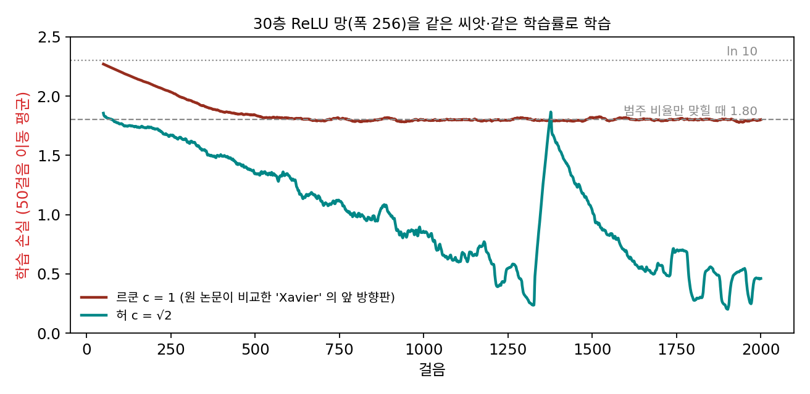
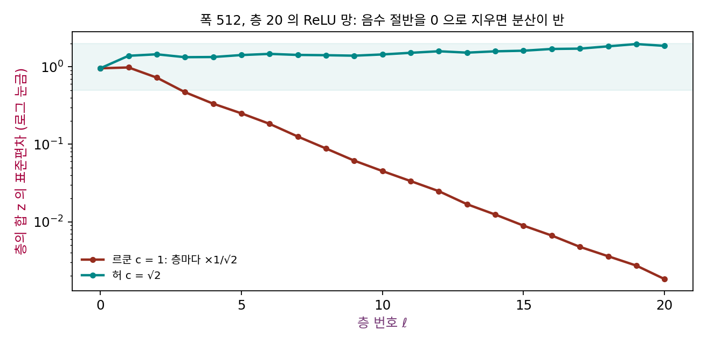
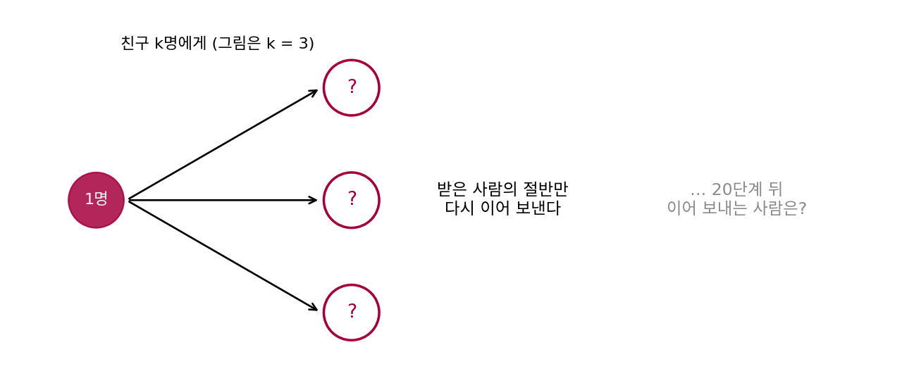
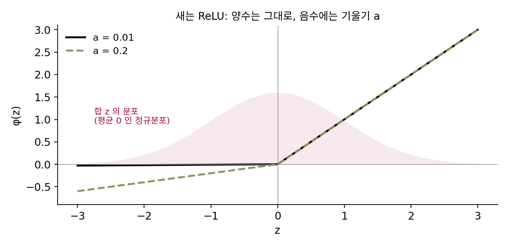
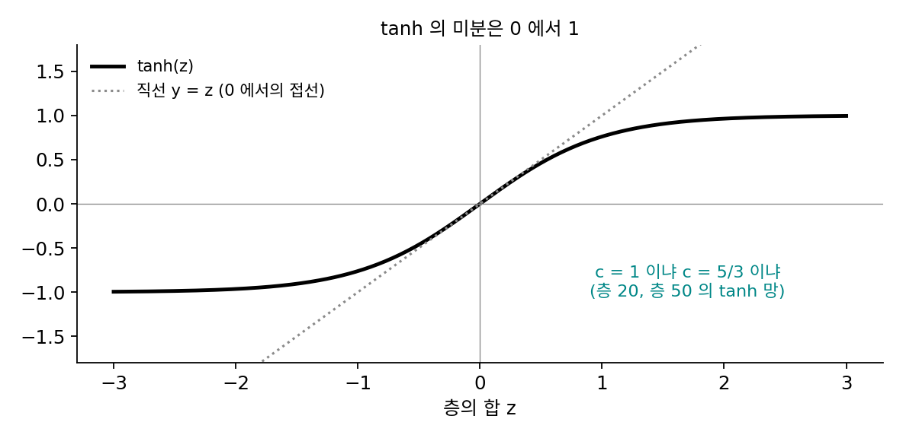
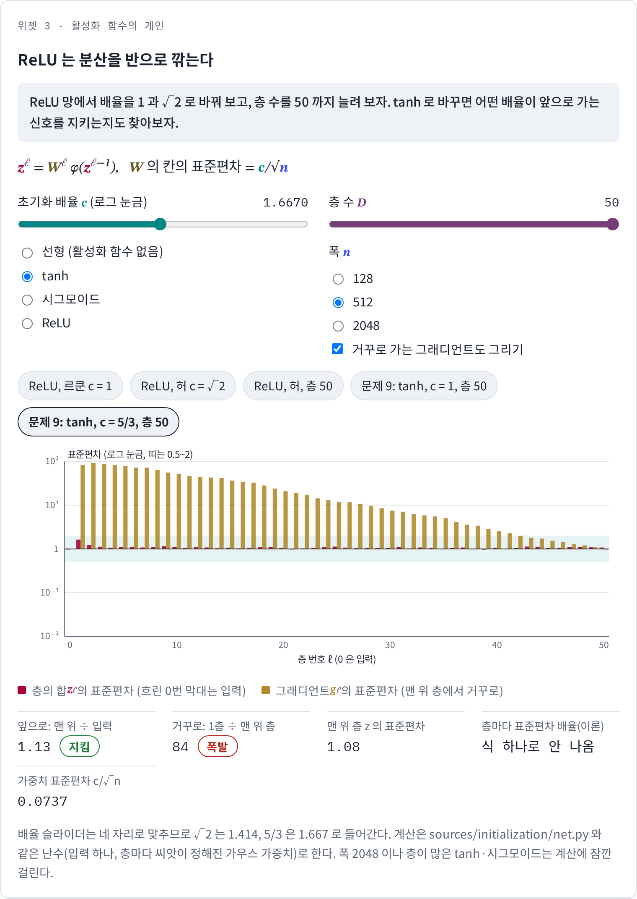

게인: 활성화 함수가 깎은 분산을 되돌린다
시그모이드 대신 쓰게 된 활성화 함수가 ReLU(음수는 0으로 지우고 양수는 그대로 두는 함수, max(0, z))다. 미분이 양수 쪽에서 언제나 1이라 시그모이드처럼 1/4로 깎이지 않는다. 그렇다면 르쿤 초기화(c = 1)와 ReLU를 함께 쓰면 앞으로도 거꾸로도 크기가 지켜질까? 하지만 ReLU는 합의 절반쯤을 0으로 지우는데, 그 지워진 절반은 신호의 크기에 아무 일도 하지 않을까?
역사: 30층에서 멈춘 학습

2015년 2월, 마이크로소프트 연구소 아시아의 허카이밍(何恺明, Kaiming He), 장샹위(张祥雨, Xiangyu Zhang), 런샤오칭(任少卿, Shaoqing Ren), 쑨젠(孙剑, Jian Sun)은 논문 「정류기를 깊이 파고들기: ImageNet 분류에서 사람 수준의 성능을 넘어서」를 공개했다. 논문은 그해 국제 컴퓨터 비전 학회 ICCV 에서 발표되었다. 이 논문의 이름난 결과는 ImageNet(사진 백만여 장을 천 가지 범주로 나눈 데이터셋) 2012 분류의 상위 5개 오답률(모델이 고른 후보 다섯 개 안에 정답이 없는 비율) 4.94%로, 보고된 사람의 오답률 5.1%보다 낮았다는 것이다. 그 뒤에는 ReLU 망을 처음부터 깊게 학습시키기 위한 초기화의 유도가 있었다.
그들은 당시 쓰이던 초기화들을 따져 보았다. 옥스퍼드 VGG 팀의 망처럼 표준편차를 작은 고정값으로 두면 일부 깊은 망이 왜 학습을 멈추는지 이 유도로 설명했고, 글로로·벤지오의 초기화와도 비교했다. 층이 22개인 망에서는 두 초기화가 모두 수렴했고 자신들의 것이 조금 더 일찍 오차를 줄였다. 층이 30개인 망에서는 자신들의 초기화는 수렴했지만 글로로·벤지오의 초기화(그들이 ‘Xavier’ 라고 부른 것)는 「학습을 완전히 멈추게」 했고, 그래디언트를 지켜보니 모두 사라지고 있었다고 적었다. 그런데 같은 논문은 그 30층 망의 정확도가 14층 망보다 오히려 나빴다고도 적었다. 깊게 쌓을 수는 있게 되었지만 깊게 쌓아서 얻는 것이 없었다는 이 기록이 열 달 뒤 같은 팀의 다음 논문으로 이어진다.

30층에서 멈췄으면 초기화를 몇 가지 바꿔 가며 다시 돌려 보면 됐잖아요. 그게 논문까지 될 일이에요?

그 30층 망이 무엇을 배우던 망이었죠?

ImageNet이요. 사진이 백만여 장… 아, 한 번 돌리는 것부터 큰일이었겠네요.

이 책의 그림은 폭 256인 완전 연결 망과 지어낸 문제로 2,000스텝만 돌려 같은 모습을 다시 낸 거예요. 원 논문은 사진 백만여 장으로 합성곱 망을 학습시켰어요. 이것저것 바꿔 보며 찾기보다 왜 멈추는지 식으로 먼저 알아야 했던 이유가 여기 있어요.

그런데 글로로 초기화는 앞으로도 거꾸로도 지키도록 맞춘 거였잖아요. 그게 왜 30층에서 그래디언트를 잃어요?
글로로와 벤지오가 유도할 때 생각한 활성화 함수는 tanh처럼 0 근처에서 미분이 1이고 양쪽이 대칭인 함수였어요. 2010년에는 ReLU가 아직 널리 쓰이기 전이었고요.

음, ReLU는 음수를 모두 0으로 지우잖아요. 대칭인 함수에 맞춘 배율을 그대로 쓰면, 지워진 절반만큼 신호의 크기가 층마다 빠져나가는 거예요?
ReLU 망에서 르쿤과 허
르쿤 초기화(c = 1)와 c = √2를 ReLU 망(폭 512, 층 20)에서 비교하면 다음과 같다.
| 초기화 | 층 1 | 층 2 | 층 5 | 층 10 | 층 20 | 그래디언트: 층 1 |
|---|---|---|---|---|---|---|
| c = 1 | 0.980 | 0.725 | 0.251 | 0.0451 | 0.00182 | 0.00166 |
| c = √2 | 1.39 | 1.45 | 1.42 | 1.44 | 1.86 | 1.20 |
c = 1에서는 층 2부터 표준편차가 층마다 0.7배쯤으로 줄어 스무 층 뒤 0.00182가 되고, 첫 층의 그래디언트도 0.00166으로 줄었다. 줄어드는 배율 0.7은 우연이 아니다. 앞 층의 합 z가 평균 0으로 흩어져 있으면 ReLU는 음수인 절반을 0으로 지우고, 남은 절반의 제곱 평균은 원래 분산의 정확히 절반이다(표준정규 값 400만 개로 재면 0.4998). 다음 층의 합은 이 지워진 값들의 합이므로 분산이 반으로 줄고, 표준편차는 1/√2 = 0.707배가 된다.
활성화 함수가 지운 분산 1/2을 가중치 쪽에서 되돌려 주려면 c² = 2, 곧 가중치의 표준편차를 √(2/n)로 잡으면 된다. 이렇게 활성화 함수가 신호의 분산을 깎거나 늘리는 만큼을 가중치에서 되돌리는 곱을 게인 (활성화 함수가 바꾼 분산을 되돌리는 곱 / gain)이라 한다. ReLU의 게인 √2를 쓴 초기화를 흔히 「허 초기화」나 「카이밍 초기화」라 부른다. 표의 둘째 줄(c = √2)이 허 초기화로, 스무 층을 지나도 표준편차가 1.4 근처에 머물고 그래디언트도 1.2로 남았다. 맨 위 층으로 갈수록 1.86까지 조금 커진 것은 폭이 유한해서 층마다의 배율이 1에서 조금씩 벗어나고, 그 차이가 층마다 쌓인 것이다.
허와 동료들은 같은 유도를 거꾸로 가는 그래디언트에도 했는데, 거꾸로 갈 때도 ReLU의 미분은 절반의 칸에서 0이라 같은 1/2이 나온다. 30층이면 차이가 더 벌어져서, 이 장의 망으로 재면 c = 1의 맨 위 층 표준편차는 5.4 × 10⁻⁵, c = √2는 1.78이다. 논문이 적은 대로 c = 1(그들이 비교한 글로로 초기화는 폭이 같은 층에서 이것과 같다)은 층마다 1/√2배씩, 층 D개를 지나면 (1/√2)^D배가 된다. 위 그림의 재현에서 르쿤 초기화 쪽 30층 망의 첫 출력(로짓)은 표준편차가 2.9 × 10⁻⁵였고, 2,000스텝 뒤에도 가장 흔한 범주 하나만 찍는 수준(정확도 24.6%)에 머물렀다. 허 초기화 쪽은 같은 2,000스텝에 정확도 93.1%에 닿았다.

ML에서: calculate_gain 이 돌려주는 수
파이토치의 torch.nn.init.calculate_gain은 활성화 함수 이름을 받아 게인을 돌려준다. 실제로 불러 보면 'linear'와 'sigmoid'는 1, 'relu'는 √2 = 1.414, 'tanh'는 5/3 = 1.667이다. nn.init.kaiming_normal_(w, nonlinearity='relu')는 가중치를 평균 0, 표준편차 √2/√(팬인)인 정규분포로 다시 뽑는다. ReLU 망을 직접 깊게 쌓는다면 이 한 줄이 위 표의 첫 줄과 둘째 줄을 가른다. 파이토치 문서는 tanh의 5/3이 어디서 나온 수인지 밝히지 않으므로, 5/3이 무엇을 지키고 무엇을 내주는지는 아래 문제 9에서 따져 본다.
문제 7. 단체 문자 이어 보내기
한 사람이 받은 단체 문자를 친구 k명에게 보내는데, 문자를 받은 사람 가운데 절반만 그것을 다시 이어 보낸다. 처음에 1명이 보냈을 때, 20단계 뒤 문자를 이어 보내는 사람은 몇 명쯤인가? (가) k = 1, 2, 3일 때. (나) 사람 수가 단계마다 그대로 유지되려면 k는?

한 사람이 세 명한테 보내면 3²⁰, 엄청나게 퍼지겠죠.
받은 사람이 전부 이어 보내나요?

아, 절반만이요. 그러면 한 단계에 3 × 1/2 = 1.5배라서 20단계면 1.5²⁰ = 3,325명이에요. k = 1이면 0.5배씩이라 20단계 뒤 9.5 × 10⁻⁷명, 사실상 끊기고요. k = 2면 2 × 1/2 = 1, 한 명씩 이어져요.

(나)는 k × 1/2 = 1이니까 k = 2야. 절반이 떨어져 나가는 걸 두 배로 보내서 메꾸는 거지.
ReLU 망과 나란히 놓으면 무엇이 무엇에 해당하죠?
이어 보내지 않는 절반이 ReLU가 0으로 지우는 절반이요.
그럼 보내는 친구 수 k는 뭐야?

한 층을 지날 때 곱해지는 분산 배율 c²이지. c² × 1/2 = 1이어야 하니까 c² = 2, c = √2. k = 1이 르쿤 초기화를 ReLU에 쓴 경우고.

출석 체크를 조장이 조원 두 명한테 넘기면, 절반은 까먹어도 결국 한 명씩은 이어지는 거랑 같네요.
문제 8. 새는 ReLU 의 게인
새는 ReLU(leaky ReLU)는 양수는 그대로 두고 음수에는 작은 기울기 a를 곱한다(φ(z) = z (z > 0), a·z (z < 0)). (가) 평균 0인 정규분포의 합 z에 대해 E[φ(z)²]는 Var(z)의 몇 배인가? (나) 분산을 지키는 게인은? a = 0.01, 0.2에서 구하라. (다) a = 1과 a = −1이면 무엇이 되는가?

z를 양수 쪽과 음수 쪽 절반으로 나눠 볼게. 양수 쪽은 그대로 두니까 제곱 평균에 Var/2만큼 보태.
음수 쪽은?
a를 곱했으니 제곱하면 a²배, a²·Var/2. 더하면 (1 + a²)/2배야. 그러니까 게인은 √(2/(1 + a²))이고, a = 0.01이면 1.4141, a = 0.2면 1.3868이야.
값을 400만 개 뽑아 재 보니 a = 0.2에서 E[φ²]가 0.5198, 이론값 0.52랑 맞아요. 그 배율로 20층 망을 돌리면 맨 위 표준편차가 1.796으로 지켜지고요.
(다)는요? a = 1과 −1은 이상한 경우예요.

a = 1이면 음수도 그대로니까 그냥 선형이에요. 게인 √(2/2) = 1, 르쿤 초기화로 돌아오네요. a = −1이면… 음수에 −1을 곱하니까 |z|, 절댓값이에요. 그런데 이것도 게인이 1이에요. 절댓값이면 음수를 다 양수로 뒤집으니까 평균이 생기는데 괜찮은 건가요?

게인이 따지는 건 E[φ(z)²]였어요. 평균이 아니라 제곱의 평균이요.
|z|² = z²이니까… 제곱 평균은 선형이랑 똑같네요.
그래도 평균이 0이 아닌 게 층마다 쌓이지 않아?
다음 층의 합은 φ(z)에 무엇을 곱해 더하죠?

평균 0인 무작위 가중치요. 그럼 φ의 평균이 0이 아니어도 합의 평균은 0이고, 분산만 E[φ²]로 정해지네요. 실제로 돌려도 20층 뒤 0.921이에요. 게인은 활성화 함수 모양이 아니라 제곱 평균 하나만 보는 거네요. a = 0이 ReLU의 √2고요.

a = 0.01이면 게인이 ReLU랑 거의 같아서, 새는 ReLU에 그냥 kaiming_normal_의 기본값을 써도 되는 거였어요. 학점 계산에서 재수강 과목 반영 비율이 1%면 사실상 무시해도 되는 것처럼요.
문제 9. tanh 의 5/3
파이토치의
calculate_gain('tanh')는 5/3을 돌려준다. (가) tanh의 미분은 0에서 1인데, 그러면 게인은 1이어야 하지 않을까? c = 1과 c = 5/3으로 tanh 망(폭 512)을 층 20과 층 50으로 돌려 맨 위 층 합의 표준편차와 첫 층의 그래디언트를 비교하라. (나) 앞으로 가는 신호와 거꾸로 가는 그래디언트를 함께 지키는 c가 있는가? (풀어 본 뒤 위젯 3의 「문제 9」 단추로 확인해 보자.)

tanh는 0 근처에서 직선 y = z랑 거의 같으니까 c = 1이 맞을 것 같아요.
0 근처에만 머문다면 그렇겠죠. 실제로 돌려 볼까요?

c = 1이면 층 1에서 0.980이던 표준편차가 층 10에서 0.242, 층 20에서 0.161, 층 50에서 0.080이에요. 천천히지만 계속 줄어요. c = 5/3이면 층 10에서 1.116, 층 50에서 1.076으로 거의 그대로고요.
tanh는 0에서 멀어질수록 납작해지니까, 합이 표준편차 1쯤으로 흩어져 있으면 tanh(z)의 제곱 평균은 Var(z)보다 작아. 매 층 조금씩 깎이는 거지. 그걸 메꾸는 배율이 1보다 커야 하고, 5/3이 그쯤인 것 같아.
그래디언트도 봐요. 층 50에서 첫 층의 그래디언트는 어떻게 됐죠?
어… c = 1이면 0.145로 조금 줄었는데, c = 5/3이면 83.4예요. 앞으로를 지켰더니 거꾸로가 커졌어요. 층마다 찍어 보면 그래디언트의 표준편차가 1.09배쯤씩 커지고요.
그 1.09배를 식으로도 얻을 수 있어요. 거꾸로 한 층의 분산 배율은 c²·E[tanh′²]예요. 신호의 분산이 자리를 잡은 곳에서 재 보면요?
c = 5/3에서 1.205, 표준편차로는 √1.205 = 1.098배예요. 찍은 값이랑 맞네요. c = 1이면 분산 배율은 0.997로 거의 1인데, 그때는 신호가 0으로 사그라들고요.
tanh 하나로 신호와 그래디언트를 동시에 지키는 c는 없어요. 파이토치가 왜 5/3을 골랐는지는 문서에 적혀 있지 않지만, 계산해 보면 5/3은 앞으로 가는 신호를 1 근처에 두는 쪽이고, 그 대가로 그래디언트가 조금씩 커지는 것을 받아들인 값이에요. 반대로 그래디언트의 분산 배율이 정확히 1이 되는 경계는 c = 1 근처예요. 연구자들은 이 경계를 「혼돈의 가장자리(edge of chaos)」라고 불러요. 그보다 작으면 신호가 꺼지고, 크면 신호가 혼돈스럽게 퍼진다는 뜻이에요.
층 20이면 c = 5/3의 그래디언트가 4.02배라 견딜 만한데, 층 50이면 83배네요. 기본값은 기본값일 뿐이고 깊이에 따라 다시 봐야 하는 거구나.
